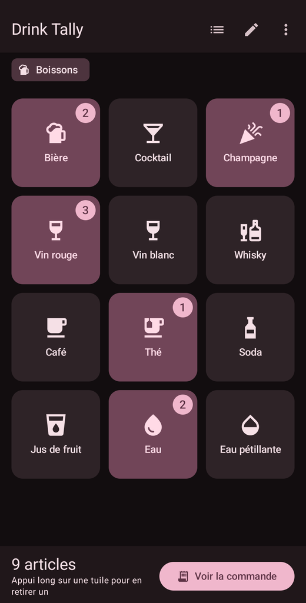
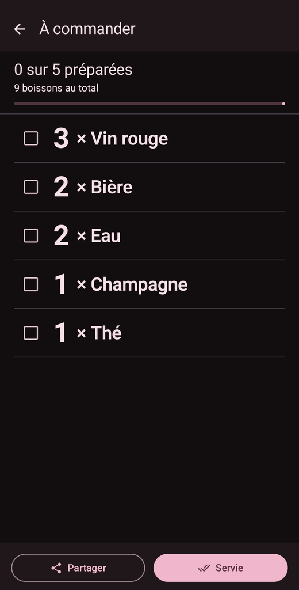

Prise de commande rapide entre amis, et sans oubli.
Tes amis te commandent leur boisson tous en même temps. À peine arrivé au comptoir, tu en as déjà oublié la moitié. Drink Tally note la commande à ta place, en quelques appuis.

1On te donne la commande, tu appuies. Une tuile par boisson, un compteur qui monte.

2Au comptoir, tu lis la liste et tu coches ce qui est servi.
Un appui, une boisson. Le tour de table se note en quelques secondes, sans quitter des yeux celui qui parle. Un appui long pour corriger.
La liste « À commander » regroupe tout par boisson, prête à être lue au barman ou au serveur.
Des cases à cocher pour suivre ce qui est déjà servi quand la commande arrive par vagues.
Un catalogue à toi. Noms, icônes, ordre d'affichage : tes habitudes tombent sous le pouce.
Remise à zéro en deux gestes, et la tournée suivante peut commencer.
Quand ça sert
La tournée du pub, le café de dix heures pour tout l'open space, la commande de la table en terrasse, l'apéro entre voisins. Partout où une personne va chercher les boissons de plusieurs autres — debout, dans le bruit, sans réseau.
Ce que l'application ne fait pas
Drink Tally fonctionne entièrement hors ligne. Aucun compte à créer, rien d'envoyé sur internet, aucun traceur, aucune publicité. Les prénoms que tu saisis ne quittent jamais ton téléphone.
Français, anglais, néerlandais, espagnol, allemand et italien. L'application suit la langue du téléphone, ou celle que tu choisis dans les paramètres.
Premium
Tout ce qui précède est gratuit. Pour 3,99 € en achat unique — définitif, sans abonnement — s'ajoutent les prénoms, qui te disent à qui rendre quel verre en revenant à la table ; les listes multiples, une pour le bar, une pour les cafés du bureau, une pour les desserts ; et les photos, pour remplacer les icônes par tes propres images.
Your friends all call out their drink at once. By the time you reach the counter, half of it is gone. Drink Tally takes the order for you, in a few taps.
1People call out their drink, you tap. One tile per drink, a counter that climbs.2At the counter you read the list out, and tick off what has been served.
One tap, one drink. Go round the table in seconds without looking away from whoever is talking. Long press to correct.
The order list groups everything by drink, ready to read out to the barman or the waiter.
Checkboxes to keep track of what has already been served when the order arrives in waves.
A catalogue of your own. Names, icons, display order — your regulars sit under your thumb.
Reset in two gestures, and the next round can start.
When it helps
The pub round, the ten o'clock coffee run for the whole floor, the table's order on a terrace, drinks with the neighbours. Anywhere one person fetches drinks for several others — standing up, in a noisy room, with no signal.
What the app does not do
Drink Tally works entirely offline. No account to create, nothing sent over the internet, no trackers, no ads. The names you enter never leave your phone.
English, French, Dutch, Spanish, German and Italian. The app follows your phone's language, or the one you pick in the settings.
Premium
Everything above is free. For €3.99 as a one-time purchase — for good, no subscription — you also get names, so you know whose glass is whose when you get back to the table; multiple lists, one for the bar, one for the office coffee run, one for desserts; and photos, to replace the icons with your own pictures.